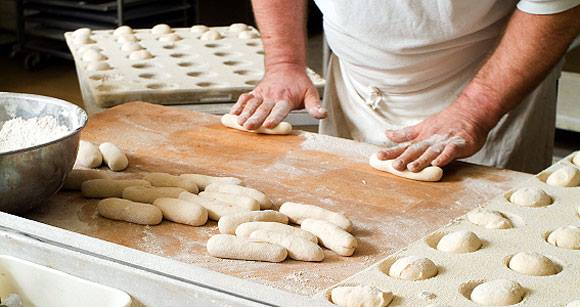

¿Que tipo de trabajo se hace en una panaderia?
Este se dvide en 6 trabajos.
- latero
- pastelero
- panadero
- facturero
- repostero
- ayudante

una panaderia es un establecimiento donde se produce y/o se comercializa pan.
Este se dvide en 6 trabajos.
Cada trabajo tiene sus herramientas, aunque aveces 1 de ellas puede usarse en 2 o mas.
estos son el ejemplo de algunos:
la cual lo puede usar tanto el panadero como el repostero,(ejemplo: pan y palmeras).
que las puede sar tanto el panadero como el repostero.
normalmente y por recomendacion se utiliza remera y pantalon largo, ambos de color blanco, una cofia y delantal.